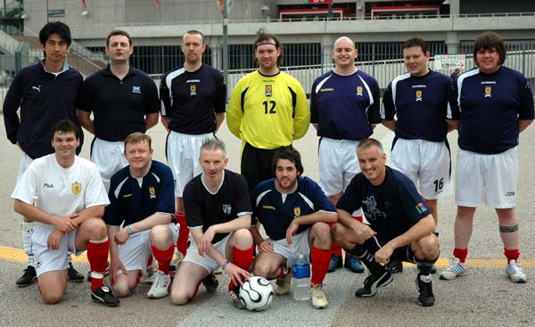

|
Saitama Stadium, Sunday 14th May. Walking a well-trodden line between merriment and uproar the Scotland supporters club, better known as the ‘Tartan Army’, will depart Japan happy men, albeit it happy men in skirts.
The Scottish national team won the Kirin Cup competition with a 0-0 draw against Japan at Saitama Stadium on Saturday, 13th May (meaning some new silver wear in the trophy cabinet for the first time in 20-years) and the following evening, the Tartan Army representative team, well-known for their footballing exploits the world over, proved they too can play a bit.
Also held at the Saitama Stadium facility and arranged by Footy Japan Ltd. the Tartan Army team obliterated the Saitama Stadium residents’ team with a comfortable 3-0 win. Tokyo Hibernian FC, current champions of the Tokyo Metropolis League, proved a little more resilient however, putting four past the Scots without conceding.
“We spent 5-days in training building up to these games,” says Army General Jimmy Black, clasping a suspected broken wrist sustained during the match against Hibs. “Mostly in the Hobgoblin, Legends and Paddy Foley’s. The boys really enjoyed themselves supporting the team and playing against the locals here and Japan’s been really good to us, we’ve had a great time. As for the national team, they did the hard work against Bulgaria and we were happy with that.”
Internationally recognized as ‘the consummate football fans’ and with a (rare) piece of silver wear on its way home, the Tartan Army will march with pride back to Scotland.

The Tartan Army Squad, minus those who didn't make it back from celebrations of Scotlands Kirin Cup Victory, were boosted by appearances by a couple of Footy Japan's members.
After daring to wear an England Shirt to the Scotland celebrations in Roppongi, TML Maestro, Sid Lloyd then had the audacity to be the first Englishman to score a goal for the Tartan Army in their 2 year history. Luckily by acting as good samaritan (taking Jimmy to hospital with his broken elbow) the silver fox was allowed to live by the men in kilts, just proving that football can bring peace & harmony to the world!!
Reporter: TML.
|